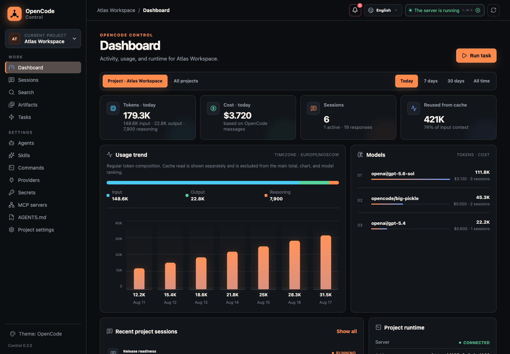
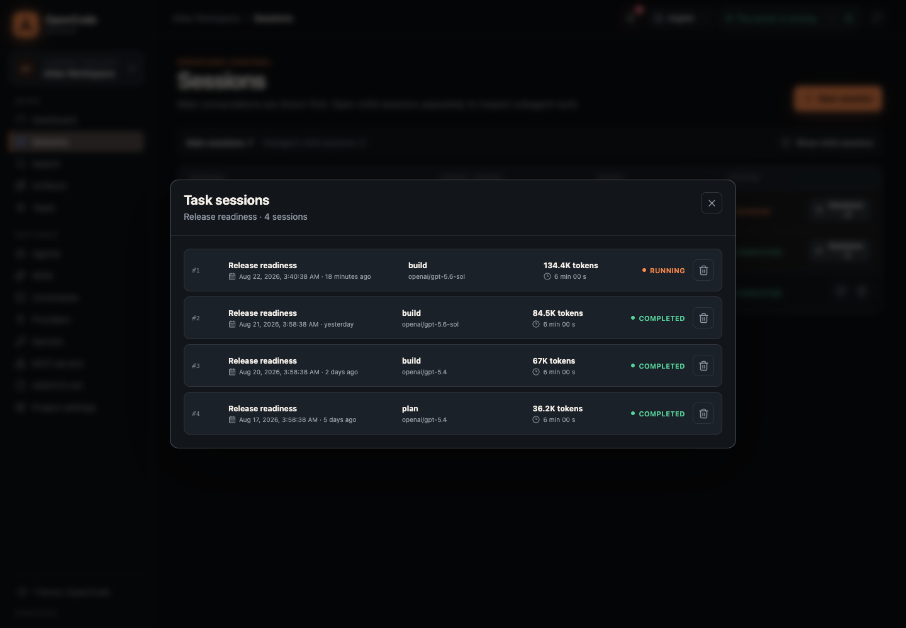
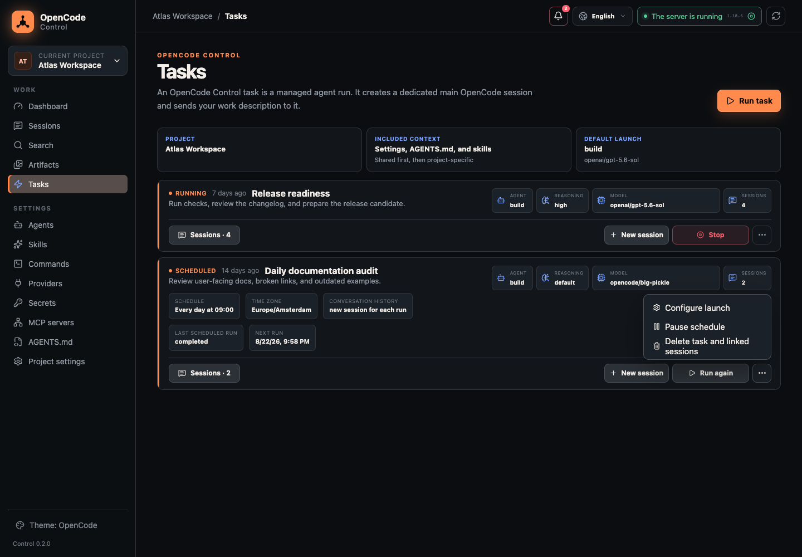
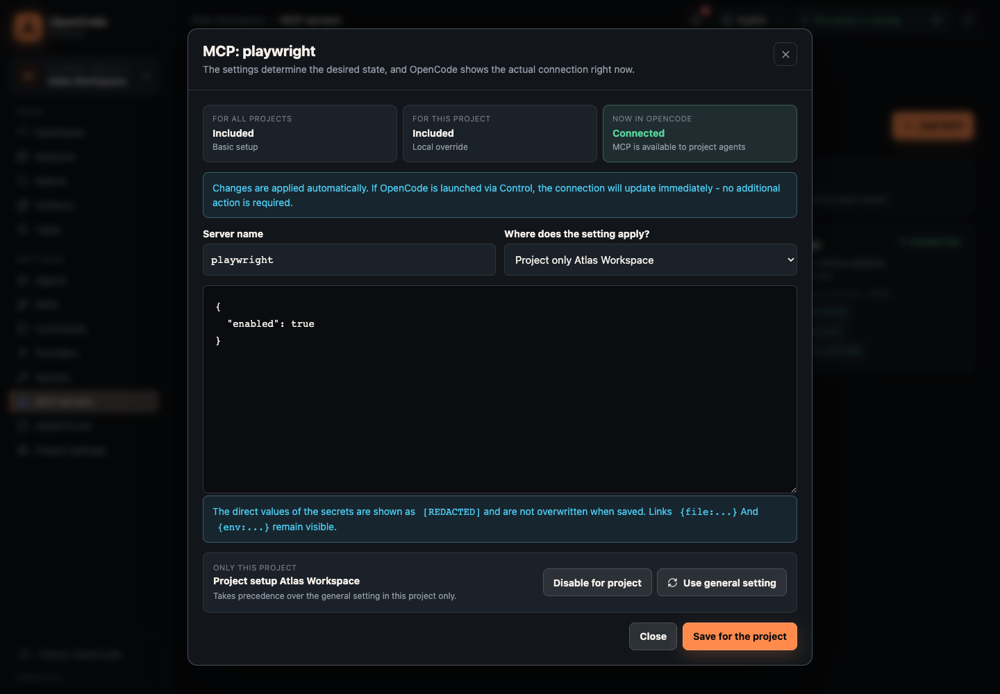
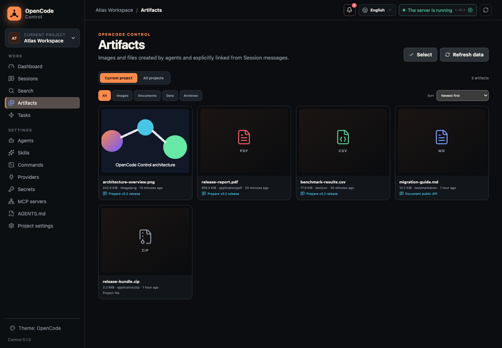

Projects and runtime
Manage multiple local projects, managed opencode serve processes, external loopback endpoints, and restored servers.
Local-first alpha
A local control plane for OpenCode projects, agents, tasks, configuration, Git workflows, and generated artifacts.
Product Preview
OpenCode Control keeps the execution engine in OpenCode, then adds the workspace, runtime, usage, and project controls around it.

Features
Manage multiple local projects, managed opencode serve processes, external loopback endpoints, and restored servers.
Continue conversations, answer permission requests, run managed Tasks, rerun or abort work, and schedule recurring agent runs.
Edit project and global Agents, Skills, Commands, MCP, providers, secrets, AGENTS.md, and OpenCode JSON/JSONC config.
Track tokens, cache reuse, cost, Sessions, providers, models, agents, and project-level breakdowns locally.
Search local Session history with deep links, then preview images, PDFs, CSV, JSON, Markdown, logs, ZIP files, and more.
Use status, diff, stage, commit, revert, and guarded reset while config writes stay atomic with preflight and rollback.
How It Works
The app listens on loopback, stores Control state on your machine, and keeps OpenCode
files such as Agents, Skills, Commands, MCP, and AGENTS.md native.
Screenshots
Real product screens from the repository, arranged around common agent workflows.

Grouped Task runs, exact timestamps, statuses, usage, Markdown, tool calls, attachments, todos, and child subagent Sessions.

Create manual or recurring agent runs, pause or resume schedules, rerun work, abort active runs, and inspect run history.

Compare global config, project overrides, and live runtime connection state before applying changes to OpenCode.

Open generated images, PDFs, CSV, JSON, Markdown, text, logs, and ZIP archives from explicit artifact locations.
Quick Start
The installer builds the frontend and Python wheel, installs opencode-control
with uv tool, then starts the local browser UI.
git clone https://github.com/opsmon/Opencode-Control.git OpenCode-Control
cd OpenCode-Control
./install.shAfter installation, run opencode-control start to open the local Control UI again.
Open Source
OpenCode Control is MIT licensed and designed as a local-first layer around the OpenCode CLI and its native project files.